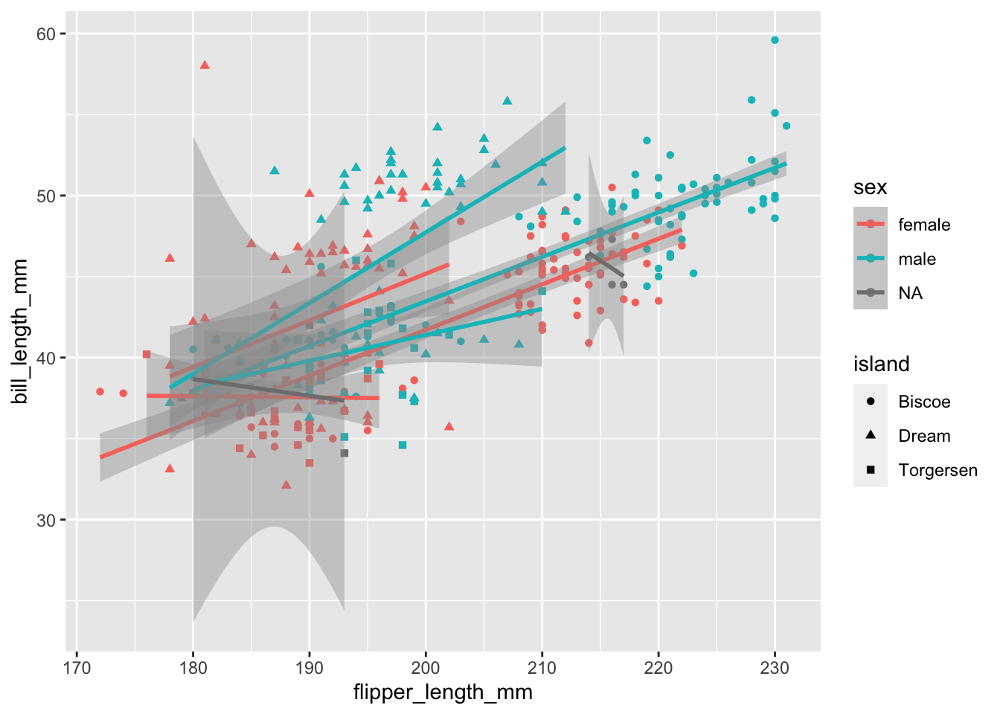
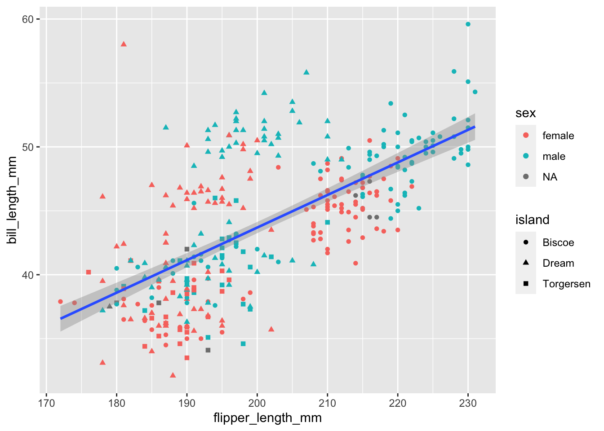
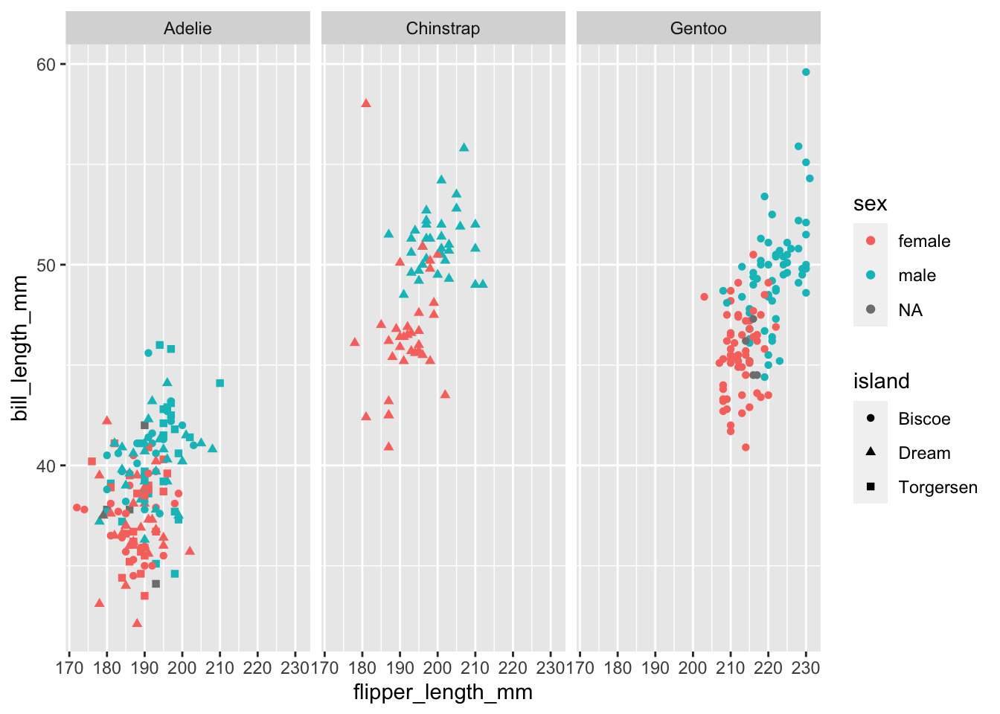
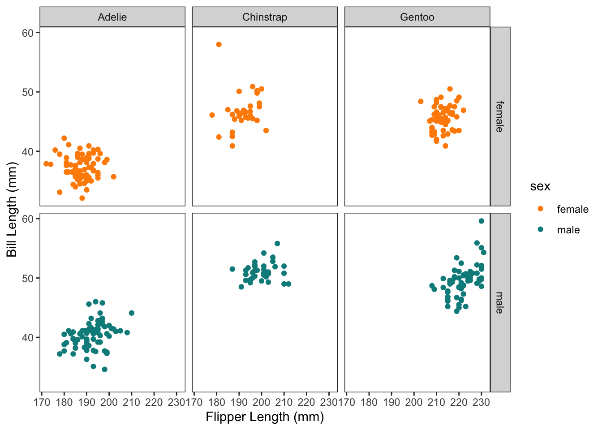
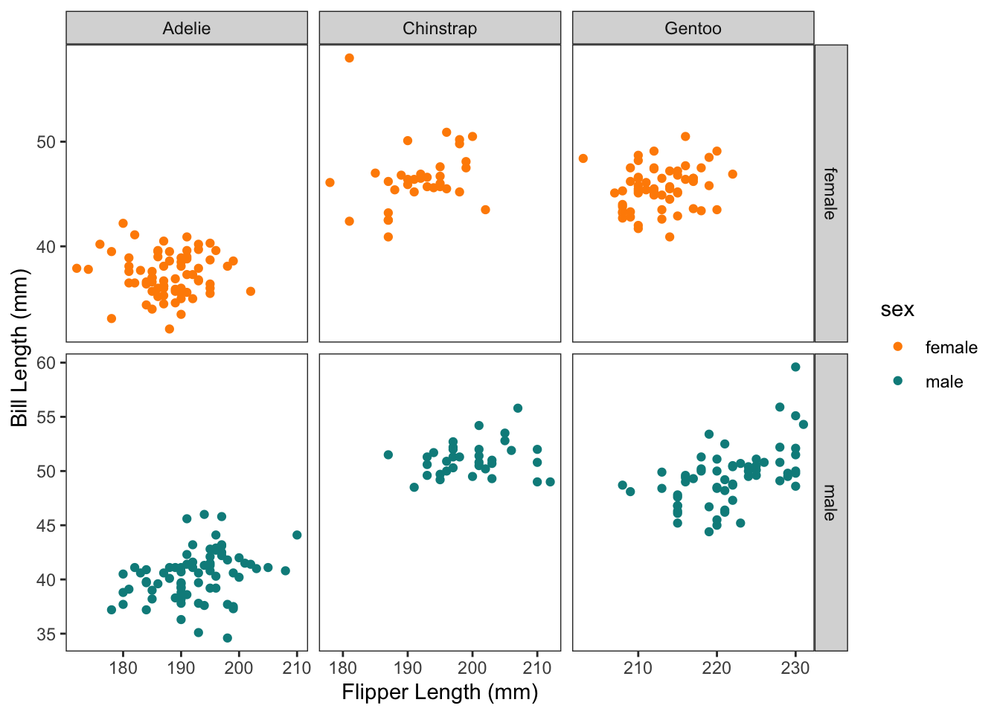

```{r}
ggplot()
```
The ggplot2 package was written by Hadley Wickham and is based on the book ‘The Grammar of Graphics’ by Leland Wilkinson (2005), with some modifications. See https://ggplot2-book.org/ or http://vita.had.co.nz/papers/layered-grammar.pdf for more details on the theory behind the grammar in ggplot2.
The grammar is a coherent way of describing your plot using element that apply to any plot you want to make. These elements are built up into a plot using layers. Together, a graphic is produced that maps the data to aesthetic attributes of geometric objects.
aes(): aesthetic attributes - Colour, shape, size, linetype, linewidth, etc. The data can be mapped to these. E.g. each treatment could be a different colour on your plot by mapping the column containg the treatments to the colour aesthetic.
geom_: geometric object - This is what you see: “visual marks that represent data points”. The points, lines, polygons, etc.They also usually define what ‘type’ of plot it is, and is kind of similar to the types of plots you see in Excel.
The finer details of mapping is described with scales, coordindate systems, facets and themes. See links above for theory but they will be covered as we go in the following examples.
Building the layers:
ggplot() initialises a ggplot object.```{r}
ggplot()
```
```{r}
ggplot(data = penguins,
mapping = aes(x = flipper_length_mm, y = bill_length_mm))
```
E.g. this adds geom_point() which is similar to a scatter plot in Excel. Notice we are using a + symbol to add layers of information to the ggplot, not a pipe.
```{r}
ggplot(data = penguins,
mapping = aes(x = flipper_length_mm, y = bill_length_mm))+
geom_point()
```Warning: Removed 2 rows containing missing values (`geom_point()`).
geom_smooth()```{r}
ggplot(data = penguins,
mapping = aes(x = flipper_length_mm, y = bill_length_mm))+
geom_point()+
geom_smooth(method = 'lm') #lm = linear model
````geom_smooth()` using formula = 'y ~ x'Warning: Removed 2 rows containing non-finite values (`stat_smooth()`).Warning: Removed 2 rows containing missing values (`geom_point()`).
When we generate some plots, they will be displayed below the code chunks. Various controls are available to changing the size of the figures and how they look. For example, figure width can be set to 8 or 10 for larger plots by adding {r fig.width = 10} at the start of code chunk.
To view plots in the ‘Plots’ window inside RStudio, copy and paste the code that generates the plot into the ‘Console’ directly (keyboard shortcut Ctrl + 2) and run it. This will let you Zoom and Export directly if needed. We will also cover saving plots at end of this chapter.
+), modifying scales, faceting, adding themes and other customisations. We know there are more columns of data with important information, so let’s map the column sex to the colour aes```{r}
ggplot(data = penguins,
mapping = aes(x = flipper_length_mm,
y = bill_length_mm,
colour = sex))+
geom_point()
```Warning: Removed 2 rows containing missing values (`geom_point()`).If we were to add our regression line again now, we would see that it is split by the same groups as our colour aes:
```{r}
ggplot(data = penguins,
mapping = aes(x = flipper_length_mm,
y = bill_length_mm,
colour = sex))+
geom_point()+
geom_smooth(method = 'lm')
````geom_smooth()` using formula = 'y ~ x'Warning: Removed 2 rows containing non-finite values (`stat_smooth()`).Warning: Removed 2 rows containing missing values (`geom_point()`).Remember you can see what aesthethics are relevant (and required) for each geom by looking at the help page for the geom you’re working with
Maybe we should also map the island information to an aes. We can still easily add different shapes to the points:
```{r}
ggplot(data = penguins,
mapping = aes(x = flipper_length_mm,
y = bill_length_mm,
colour = sex,
shape = island))+
geom_point()+
geom_smooth(method = 'lm')
````geom_smooth()` using formula = 'y ~ x'Warning: Removed 2 rows containing non-finite values (`stat_smooth()`).Warning: Removed 2 rows containing missing values (`geom_point()`).
Now would be a good time to mention that so far we have specified aes() at the ‘whole plot’ level, but we can actually map values to 1 particular geom_. In this case, we might still prefer to have 1 regression line for the whole data set. So, we know that x = and y = will stay the same for all layers this time, but we can be more specific about our colour = and shape =
```{r}
ggplot(data = penguins,
mapping = aes(x = flipper_length_mm,
y = bill_length_mm))+
geom_point(aes(colour = sex, shape = island))+
geom_smooth(method = 'lm')
````geom_smooth()` using formula = 'y ~ x'Warning: Removed 2 rows containing non-finite values (`stat_smooth()`).Warning: Removed 2 rows containing missing values (`geom_point()`).
It’s starting to get a little crowded. Let’s drop the regression line and try mapping the species column to the point size aes.
```{r}
ggplot(data = penguins,
mapping = aes(x = flipper_length_mm,
y = bill_length_mm
))+
geom_point(aes(size = species,
colour = sex,
shape = island))
```Warning: Using size for a discrete variable is not advised.Warning: Removed 2 rows containing missing values (`geom_point()`).It’s getting messy! but it does seem like the points are clustering by species. It might be easier if we split the plot into facets (subplots) for each species.
There are 2 key functions we can use to split our plots up easily:
facet_wrap(): wrap facets into a rectanglefacet_grid(): facets into either columns, rows or bothSee the cheat sheet for a visual on the differences.
Often if we have 1 variable we are interested in faceting by, and we are just exploring the data, we can quickly lay out the facets using facet_wrap(). Just like aes() helps us quote column names for the mapping = argument, vars() helps us tell the facet functions which columns to use.
```{r}
ggplot(data = penguins,
mapping = aes(x = flipper_length_mm,
y = bill_length_mm
))+
geom_point(aes(colour = sex,
shape = island))+
facet_wrap(facets = vars(species))
```Warning: Removed 2 rows containing missing values (`geom_point()`).
Then we might decide to drop the island information, and tidy up the plot with a few tweaks. Don’t mind the code here yet… but we’re starting to get a little fancy and move towards plots for communication/explanation rather than our rough exploratory plots.
We can also assign the ggplot to an object name (which puts it in our environment) and then call it again with additional + layers. I’ll assign our fancier graph to the object name p.
```{r}
#| code-fold: true
p <-
penguins %>%
drop_na(bill_length_mm, bill_depth_mm, sex) %>%
ggplot(aes(x = flipper_length_mm , y = bill_length_mm, colour = sex))+
geom_point()+
scale_color_manual(values = c("darkorange","cyan4"), na.translate = FALSE)+
theme_bw()+
theme(panel.grid = element_blank())+
xlab("Flipper Length (mm)")+
ylab("Bill Length (mm)")
p +
facet_wrap(vars(species))
```If we also wanted to facet by sex, we could use facet_grid():
```{r}
p +
facet_grid(rows = vars(sex),
cols = vars(species))
```
Sometimes we also want to control how the axis are displayed. Normally they are all "fixed" so that the axis scales stay the same for all x and all y axis. But we can free them up:
```{r}
(p <- p +
facet_grid(rows = vars(sex),
cols = vars(species),
scales = "free")
)
```
It’s also possible to use ‘free_x’ and ‘free_y’ to control just one.
The easiest way to save your plot is to use the ggsave() function.
It will always save the last plot you made, unless you tell it explicitly which plot to save. It also has a lot of file formats and settings to meet publisher requirements (e.g. TIFF file with a certain DPI).
```{r}
ggsave(filename = "./Outputs/example_plot.png",
plot = p,
width = 8,
height = 6,
units = "in", #inch = default
dpi = 450
#scale =,
)
```